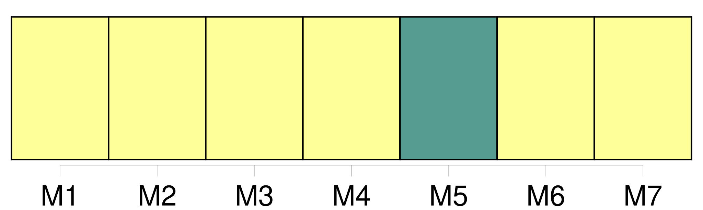
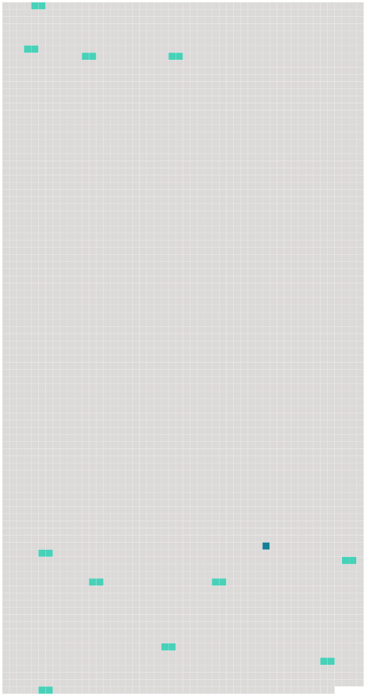

Longueur nb maillons : 12 mentions |
 |
Les États parties communiquent [au dépositaire] leur méthode de calcul conformément au paragraphe 1 du présent article ou les résultats de la conversion conformément au paragraphe 2 du présent article, selon le cas, lors du dépôt de leur instrument de ratification, d'acceptation ou d'approbation de la présente convention ou d'adhésion à celle -ci et chaque fois qu'un changement se produit dans cette méthode de calcul ou dans ces résultats. [4 phrases] Si la révision mentionnée au paragraphe précédent conclut que le coefficient pour inflation a dépassé 10 %, [le dépositaire] notifie aux États parties une révision des limites de responsabilité. [1 phrases] Si, dans les trois mois qui suivent cette notification aux États parties, une majorité des États parties notifie sa désapprobation, la révision ne prend pas effet et [le dépositaire] renvoie la question à une réunion des États parties.
[Le dépositaire] notifie immédiatement à tous les États parties l'entrée en vigueur de toute révision. [96 phrases]
Les instruments de ratification d'acceptation, d'approbation ou d'adhésion seront déposés auprès de l'Organisation de l'aviation civile internationale, qui est désignée par les présentes comme [dépositaire] [1 phrases] La présente convention entrera en vigueur le soixantième jour après la date du dépôt auprès [du dépositaire] du trentième instrument de ratification, d'acceptation, d'approbation ou d'adhésion et entre les États qui ont déposé un tel instrument. [4 phrases]
[Le dépositaire] notifiera rapidement à tous les signataires et à tous les États parties : [1 phrases]
Tout État partie peut dénoncer la présente convention par notification écrite adressée [au dépositaire] [1 phrases]
La dénonciation prendra effet cent quatre-vingt jours après la date à laquelle [le dépositaire] aura reçu la notification. [4 phrases]
Toute déclaration de ce genre est communiquée [au dépositaire] et indique expressément les unités territoriales auxquelles la convention s'applique. [2 phrases]
Article 57 [2 phrases] La présente convention restera déposée aux archives de l'Organisation de l'aviation civile internationale, et [le dépositaire] en transmettra des copies certifiées conformes à tous les États parties à la Convention de Varsovie, au Protocole de La Haye, à la Convention de Guadalajara, au Protocole de Guatemala et aux Protocoles de Montréal. |
 |
Il est possible de télécharger la ressource sur la page Ortolang |
Si vous avez des questions ou vous voyez des erreurs, merci d'envoyer un mail à silvia.federzoni89@gmail.com |